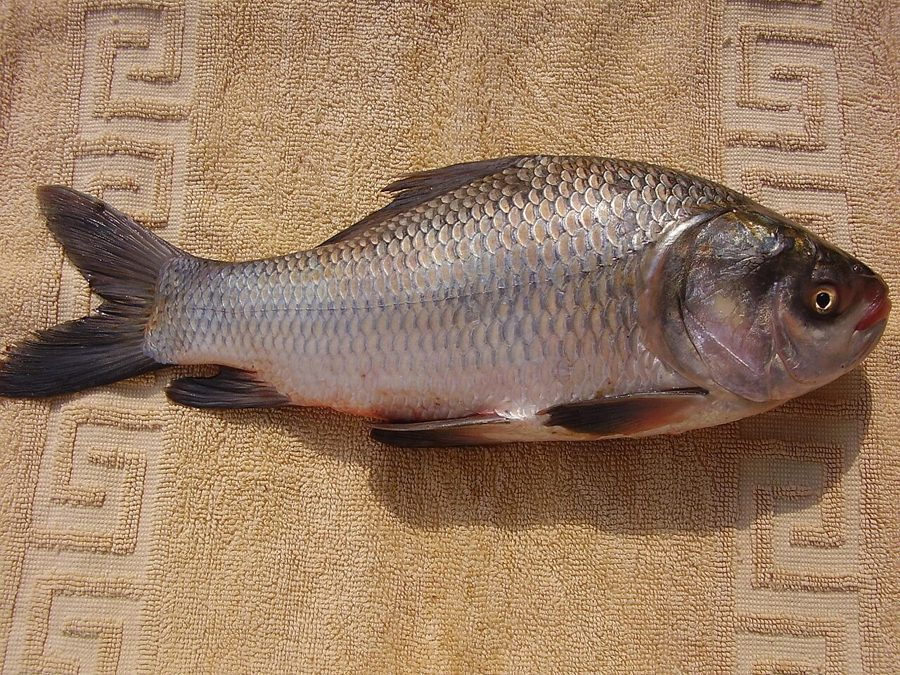

कतलाCatla
Catla catla · Cyprinidae · FSH-0002

- Scientific name
- Catla catla (Hamilton, 1822)
- Family
- Cyprinidae
- Hindi
- कतला / कतल
- Status here
- native
- IUCN
- LC
When to look कब देखें
Season not recorded.
कतला / Catla
Catla catla (Hamilton, 1822) — Cyprinidae
कतला पूर्वी UP के मत्स्यपालन का सबसे बड़ा साथी है। तालाबों में रोहू (FSH-0001) के साथ कतला ज़रूर पाली जाती है — दोनों एक ही तालाब में एक दूसरे से प्रतिस्पर्धा नहीं करते क्योंकि कतला सतह पर खाती है, रोहू मध्य गहराई में। यह "मिश्रित मत्स्यपालन" (polyculture) भारतीय तालाब-मत्स्यपालन की मूल तकनीक है। कतला सबसे तेज़ बढ़ने वाली देशी मछलियों में से है — 12 महीने में 1 किलो तक।
Quick Identification त्वरित पहचान
| Feature | Description |
|---|---|
| Size | Up to 182 cm, 38 kg (record); pond culture: 0.8–2 kg in 12 months |
| Body | Deep, compressed; arched back (dorsal profile strongly curved) |
| Head | Very large, broad head — the most diagnostic feature; wide gape mouth |
| Mouth | Large, wide, upturned — scoops from water surface |
| Scales | Large, cycloid; silvery with grey/darker dorsum |
| Fins | Reddish-orange pectoral fins — bright in breeding males |
Field tip: Among the three major Indian carps in a polyculture pond, Catla is immediately identified by its disproportionately large head and wide upturned mouth. Rohu has a smaller head and arched mouth; Mrigal has a more cylindrical snout.
Morphology आकारिकी
| Measurement | Range |
|---|---|
| Standard length (adult) | 45–80 cm |
| Total length (maximum recorded in India) | 182 cm |
| Weight (typical adult) | 1.5–5 kg |
Body: Deep, laterally compressed, with a strongly arched dorsal profile. Body depth is about 1/3 of standard length — giving a "hump-backed" appearance in larger fish.
Head: Very large — length about 1/3 of body length. Broad and wide. The large head gives the fish an impressive, somewhat comical frontal appearance.
Mouth: Large, wide, with upturned gape — positioned to scoop food from the water surface. No barbels (whisker-like appendages) — unlike some other carps.
Scales: Large, cycloid (smooth-edged) scales. Silvery overall; dorsum darker (grey-blue or greenish); ventral side paler. Lateral line complete.
Colour in breeding: Breeding males develop red-orange pectoral fins and rough (tuberculate) skin on the head — the nuptial colours are more subtle than in many fish.
बड़ा सिर, चौड़ा मुँह: कतला को पहचानना आसान है — तालाब में सबसे बड़े सिर वाली मछली। मुँह ऊपर की ओर खुलता है — सतह पर खाने के लिए।
Ecological Role पारिस्थितिक भूमिका
Surface feeder — phytoplankton and zooplankton: Catla is a filter-feeding, surface-skimming fish. It feeds almost exclusively in the top 0–50 cm of the water column:
- Phytoplankton (algae, diatoms) — primary food
- Zooplankton (Daphnia, copepods, rotifers) — important supplement, especially for juveniles
- Floating food particles, algal mats
The polyculture principle — "3-level feeding": Indian major carp polyculture works because three species occupy different vertical niches:
| Fish | Water Zone | Primary Food |
|---|---|---|
| Catla (FSH-0002) | Surface (0–50 cm) | Phytoplankton, zooplankton |
| Rohu (FSH-0001) | Mid-water (50–150 cm) | Submerged vegetation, detritus |
| Mrigal (Cirrhinus mrigala) | Bottom | Benthic detritus, mud organisms |
These three together exploit all three zones with no competition — maximum production from a single pond. This system has been practised in Bengal and eastern India for centuries.
Natural habitat: In rivers (Ganga, Yamuna, Saryu, Rapti), catla spawns during monsoon floods in fast-flowing turbid water. The flooding of riverside grasslands provides shallow breeding habitat.
तीन परतें, तीन मछलियाँ: कतला = ऊपर; रोहू = बीच; मृगल = नीचे। तीनों एक तालाब में एक साथ — बिना लड़ाई, बिना प्रतिस्पर्धा। यही भारतीय मिश्रित मत्स्यपालन की मूल खोज है।
Life Cycle / Phenology जीवन चक्र
| Month | Event |
|---|---|
| Jun–Aug | Spawning — triggered by monsoon flooding and rain; eggs semi-pelagic |
| Jul–Aug | Eggs hatch in 18–24 hours (water temp. 27–30°C) |
| Aug–Jan | Rapid juvenile growth; reaching 100–300 g in 6 months |
| Jan–Mar | Growth continues; reaches 800–1200 g by 12 months in good pond |
| Mar–May | Mature adults in rivers begin gonadal development for next season |
Induced breeding: In aquaculture, catla is bred by hormone injection (pituitary extract / HCG) in "hatchery" conditions. Eggs are artificially hatched in running water containers (Hapa net). Fry (carp spawn) sold to pond farmers.
Growth rate: Among the fastest-growing freshwater fish in India — well-fed pond catla can reach 1 kg in 8–10 months at optimal stocking density and fertilisation.
हॉर्मोन से प्रजनन: तालाब में कतला अपने आप नहीं पैदा होती — उसे नदी की बाढ़ जैसी स्थिति चाहिए। इसलिए मत्स्यपालन में हार्मोन इंजेक्शन देकर प्रजनन कराया जाता है, और बीज (तलवे) बनाए जाते हैं।
Agricultural / Human Relevance कृषि एवं मानव उपयोग
Most important food fish in eastern UP ponds: Catla is the highest-priced of the three major carps in local markets:
- Catla: ₹150–250/kg
- Rohu: ₹120–200/kg
- Mrigal: ₹80–150/kg (lower market preference)
Market preference: Catla's large head and wide body make it preferable for "head curry" — the head is considered a delicacy in Bengali and eastern UP cuisine. The larger the fish, the better the market price.
Aquaculture stocking ratio: In a standard 3-species polyculture (per hectare per year):
- Catla: 30% (lowest stocking — largest biomass)
- Rohu: 40%
- Mrigal: 30%
Target harvest: 3,000–6,000 kg/hectare/year depending on management intensity.
Government schemes: State Fisheries Department provides subsidised catla fingerlings through fish seed farms. Pradhan Mantri Matsya Sampada Yojana (PMMSY) promotes catla pond culture in eastern UP as rural income.
सबसे महँगी देशी मछली: बाज़ार में कतला की कीमत सबसे ज़्यादा होती है। बड़ा सिर "मछली के सिर की सब्जी" के लिए पसंदीदा है — पूर्वी UP और बंगाल की रसोई में।
Expected Locally स्थानीय रूप से अपेक्षित
Not a field record. Written from published accounts for eastern Uttar Pradesh. No confirmed local sighting yet — if you have seen it, that is what the atlas needs.
अभी तक स्थानीय पुष्टि नहीं। यह विवरण प्रकाशित स्रोतों से है, किसी अवलोकन से नहीं।
- Present in most village pond (talaab) polyculture operations in Basti district alongside Rohu
- Fingerlings available at Government Fish Seed Farm, Basti
- Market price significantly higher than Rohu at Basti town fish market — confirms market preference
- Largest catla specimens observed at Sarju Barrage reservoir — likely natural population from river stocking
बस्ती का मछली बाज़ार: बस्ती शहर के मछली बाज़ार में कतला और रोहू दोनों मिलती हैं — कतला हमेशा 20-30 रुपये किलो महँगी। खरीदार को अंतर पता है।
Distribution वितरण
Global range: Native to the river basins of the northern Indian subcontinent, including India, Pakistan, Bangladesh, Nepal, and Myanmar. Widely introduced for aquaculture throughout South and Southeast Asia.
In India: Native to major river systems of northern and central India (Ganga, Yamuna, Indus, Brahmaputra). Introduced extensively in reservoirs, lakes, and aquaculture ponds throughout peninsular and southern India.
In Uttar Pradesh: Present in all major rivers (Ganga, Ghaghara, Saryu, Yamuna, Rapti) and oxbow lakes. Cultured extensively in aquaculture ponds in every district of the state.
In Basti district / eastern UP: Year-round resident; most active during the feeding peak from October to January. Cultured in village ponds across Basti district and wild populations found in the Saryu and Rapti rivers.
Range notes: No significant range changes documented, though aquaculture distribution has expanded its range globally.
Research Questions शोध प्रश्न
- What is the natural population of catla in the Saryu and Rapti rivers — is there a self-sustaining wild population or only pond-escaped individuals?
- Does phytoplankton density in eastern UP village ponds limit catla production — and can targeted fertilisation (organic or inorganic) increase yield?
- Can the traditional 3-species polyculture ratio be improved for eastern UP conditions — is there an optimal stocking density for Basti district water quality?
- What fraction of Basti district pond farmers practice catla culture — and what are the primary barriers for those who don't?
- How does water quality (pH, dissolved oxygen, turbidity) in village ponds affect catla growth rate in Basti district?
Similar Species मिलती-जुलती प्रजातियाँ
| Species | How to distinguish |
|---|---|
| Labeo rohita (Rohu, FSH-0001) | Smaller head; arched, subterminal mouth (not wide upturned); mid-water feeder |
| Cirrhinus mrigala (Mrigal) | Pointed snout; small inferior mouth; bottom feeder; cylindrical body |
| Cyprinus carpio (Common Carp) | Two pairs of barbels; introduced exotic; different mouth structure |
Taxonomy & Classification वर्गीकरण
Original description. Catla catla was originally described by Francis Hamilton in 1822 as Cyprinus catla in An account of the fishes found in the river Ganges and its branches, page 318. Type locality: rivers and tanks of Bengal. It was later transferred to the genus Catla Valenciennes, 1844, and more recently by some authorities to Gibelion Heckel, 1843 (as Gibelion catla).
Subspecies. Monotypic — no subspecies are currently recognised.
Family and order placement. Belongs to the order Cypriniformes, family Cyprinidae (minnows and carps), subfamily Cyprininae. The family Cyprinidae is the largest family of freshwater fish, with over 3,000 species. Catla catla is one of the three "Indian Major Carps" (along with Rohu and Mrigal) of high economic importance in South Asian freshwater fisheries.
Phylogenetic notes. Genetic and morphological studies indicate a close evolutionary relationship with the genus Labeo. Recent taxonomic databases (including GBIF and Catalog of Fishes) sometimes place the species under Gibelion catla or Labeo catla, representing ongoing debates over generic limits within the Cyprinini tribe.
IUCN status rationale. Assessed as Least Concern (LC) by the IUCN Red List. Extremely widespread and abundant due to extensive aquaculture operations. However, wild populations in major river systems have declined due to overfishing, habitat fragmentation by dams, and pollution.
Photo Gallery फ़ोटो गैलरी
Atlas Connections संबंधित प्रजातियाँ
- FSH-0001 Rohu — polyculture partner (mid-water feeder); complementary ecology
- BRD-0010 Common Kingfisher — predator of catla fingerlings; conflict with fish farmers
- MOL-0001 Apple Snail — shares pond habitat; bottom dweller
- FLR-0005 Indian Lotus — co-occurs in talaabs; shade affects phytoplankton production
References सन्दर्भ
- Hamilton, F. (1822). An account of the fishes found in the river Ganges and its branches. Archibald Constable and Company, Edinburgh.
- Jhingran, V.G. (1991). Fish and Fisheries of India. 3rd ed. Hindustan Publishing Corp., New Delhi.
- Khan, M.N. et al. (2004). Growth and production of catla in Indian major carp polyculture. Aquaculture, 235, 191–203.
- Fisheries Survey of India (2019). Status of Freshwater Fisheries in Uttar Pradesh. FSI, Mumbai.
- Uttar Pradesh Matsya Vibhag (2021). Aquaculture Practices in Eastern UP. UP Fisheries, Lucknow.
- GBIF Occurrence Data — Catla catla, India (2026). GBIF taxon key: 2359468.
Source file: species/fauna/fish/catla.md